Creating A High-Performance Agent-Based Traffic Simulator Using C++
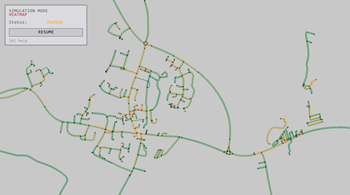
Abstract
This project explores the development of a high-performance microscopic traffic simulator to uncover how traffic phenomena may form on real world road networks. Unlike macroscopic models that treat traffic as a continuous fluid (Lighthill and Whitham, 1955), this research utilizes Agent-Based Modelling (ABM) to simulate vehicles as autonomous entities with unique kinematic properties. The primary aim is to observe how macroscopic phenomena, such as congestion waves and "phantom" traffic jams (Nagel and Schreckenberg, 1992), emerge naturally from the local interactions and decision-making logic of individual agents within a constrained network. By integrating real-world geospatial data from OpenStreetMap (OSM) via the Libosmium library, the simulator provides a platform to analyse how these interactions may manifest within actual urban road networks.
A significant portion of the work addresses the computational challenges of simulating thousands of interactive agents in real-time. To manage this complexity, the system implements data structures and algorithms such as a Quadtree spatial partitioning structure and a parallel thread pool to utilise modern multi-core architectures. Individual agent behaviours are governed by a Finite State Machine (FSM), while navigation is optimized through the $A^{*}$ search algorithm (Hart et al., 1968). Performance benchmarking shows that these optimization strategies significantly reduce frame times, maintaining a high-fidelity and high-speed simulation even at large agent densities. The final system, validated through an average road speed heatmap, successfully demonstrates that complex, non-linear traffic dynamics can be accurately replicated through the self-organization of simple, agent-based rules.
Acknowledgements
This project has been supervised and made possible by Dr Benedict Gaster.
Table of Contents
- Abstract
- 1 - Introduction
- 2 - Literature Review
- 3 - Design
- 4 - Implementation and testing
- 5 - Project evaluation
- 6 - Further work and conclusion
- 7 - Table of abbreviations
- 8 - References/Bibliography
1 - Introduction
This project focuses on the design and implementation of an agent-based traffic simulation environment using the C++ programming language. Unlike macroscopic models which simulate traffic using high level mathematical models (Nguyen et al., 2021), this application utilizes Agent-Based Modelling (ABM) to represent individual vehicles as autonomous entities with distinct behaviours and properties. The simulation environment utilises real-world geospatial data imported from OpenStreetMap (OSM), allowing for the analysis of traffic flow on actual road networks.
To guide the development of the system, the following core objectives have been established.
- Demonstrate how complex traffic phenomena, such as congestion and queuing, emerge from the local interactions of individual agents within a constrained network.
- Develop a high performance and well optimised C++ engine capable of hosting the simulation with thousands of autonomous agents in real-time.
- Integrate real world geospatial data to allow for simulation of real-world road networks.
Overall, by using optimised data structures and high-performance algorithms alongside real-world geospatial data, the project aims to provide a high-performance simulation that demonstrates large scale urban traffic patterns by simulating the microscopic interactions of individual agents.
2 - Literature Review
To address the challenges of understanding congestion and flow without costly real-world trials, traffic simulation has evolved over the past fifty years into a diverse set of mathematical models that allow for the analysis of complex network dynamics at varying levels of detail (Hoogendoorn & Bovy, 2001). Historically, traffic simulators are categorized into four formats based on their level of granularity: macroscopic, mesoscopic, microscopic, and nanoscopic (Nguyen et al., 2021).
2.1 Macroscopic and Mesoscopic Models
Macroscopic simulations model traffic flow using fluid dynamics, treating vehicles as groups via aggregate variables, making them useful for wide-area systems. This approach is exemplified by the Lighthill-Whitham-Richards (LWR) model, which calculates traffic state as continuous fluid density rather than tracking discrete vehicle positions (Lighthill and Whitham, 1955; Richards, 1956).
However, first order models like LWR are often criticized for their inability to replicate complex phenomena such as 'stop-and-go' waves caused by driving fluctuations (Sugiyama et al., 2008). This led to second order models introducing a separate equation for speed dynamics to account for driver inertia. Notable expansions include Payne's (1971) model, which added a momentum equation, and the Papageorgiou (1998) model which improved stability for real-time motorway control. Furthermore, modern macroscopic analysis often incorporates the Macroscopic Fundamental Diagram (MFD), providing a link between network-wide vehicle accumulation and performance for large-scale "perimeter control" strategies (Daganzo, 2007).
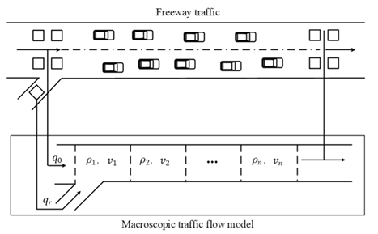
Mesoscopic simulators are a mixture of microscopic and macroscopic simulations. While traffic is modelled at a higher level of detail than macroscopic simulations, specific interactions between vehicles are less detailed than in microscopic models (Passos et al, 2011).
2.2 Microscopic and Agent Based Models
Microscopic simulators model individual entities at high fidelity as discrete simulations, where vehicles have distinct properties. Agent-based models (ABM) fall under this format, as individual agents simulate their own interactions (Nguyen et al., 2021). These simulators capture emergent properties resulting from logic such as car-following and lane-changing algorithms (Passos et al, 2011).
Microscopic movement is typically governed by car-following models which determine acceleration based on the leading vehicle. Modern simulators rely on high-fidelity frameworks such as Gipps' (1981) safety-distance model or the Intelligent Driver Model (IDM), which conceptualizes vehicles as intelligent agents adjusting for desired speed and safe headways (Treiber et al., 2000). Psychophysical models refine behaviour, notably Wiedemann (1974), implemented in VISSIM (Fellendorf and Vortisch, 2011). Furthermore, lateral movement and lane-changing decisions are frequently modelled using the MOBIL (Minimizing Overall Braking Induced by Lane Changes) framework, which evaluates the "politeness" of a lane change relative to the surrounding agents' acceleration (Kesting et al., 2007).
Agent navigation frequently utilizes the $A^{*}$ algorithm for optimality in graph-based networks (Hart et al., 1968). For dynamic recalculations, modern implementations may employ '$D^{*}$ Lite' or 'Lifelong Planning $A^{*}$' (Koenig and Likhachev, 2002). Furthermore, hierarchical pathfinding (HPA*) can be used to reduce memory overhead when simulating larger road networks (Botea et al., 2004).
Finally, nanoscopic simulations provide an even greater level of detail. These simulations take into account internal vehicle functions, such as gear shifting and vision systems (Passos et al, 2011). Micro and nanoscopic simulators, such as SUMO (Simulation of Urban Mobility), often serve as tools for developing and training autonomous vehicle systems in complex virtual environments (Kiran et al., 2021).
2.3 Computational Challenges
A key challenge inherent to microscopic simulations is the high computational cost associated with processing thousands of interactive agents (Xiao et al., 2018). For large-scale simulation, processing on a single CPU is computationally infeasible, driving research into parallel computation (Xiao et al., 2018). Agent-based models distribute load across threads or use GPU parallel architecture. This is particularly efficient because, as Zhang et al. (2024) state 'In microscopic traffic simulation, the simulation models of individual vehicles are also highly homogeneous and therefore highly compatible with the SIMD [Single Instruction, Multiple Data] computational model.' (p. 5). This GPU acceleration approach has shown huge performance improvements over established simulations (Zhang et al., 2024).
C++ is often used for high-performance systems due to low-level memory management and cache-friendly structures (Stroustrup, 2013). By utilizing Data-Oriented Design (DOD), developers can organize data to maximize cache hits and facilitate SIMD instructions (Acton, 2014). Furthermore, implementing memory pooling and custom allocators in C++ avoids performance latencies associated with frequent heap allocations during the iterative cycle (Meyers, 2005).
2.4 SUMO and MATSim - Prominent Existing Simulators.
While this project develops a custom C++ microscopic simulator, its design is informed by the principles of previously established traffic simulators. It's important to understand the key characteristics of prominent examples in the field, such as SUMO and MATSim (Multi Agent Transport Simulation), both of which are agent based microscopic simulators, with their own motivations and objectives behind their design.
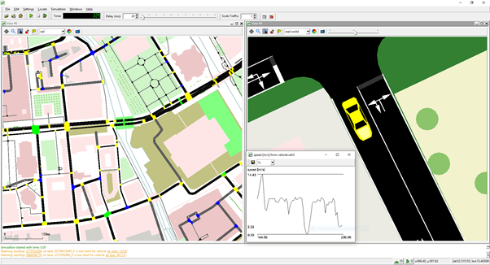
SUMO is an open-source, continuous, microscopic and multi-modal traffic simulation (Krajzewicz et al, 2002, Behrisch et al, 2011). It is designed to be multi-modal, meaning car movements are modelled alongside public transport systems and alternative networks (Krajzewicz et al, 2002). A primary feature is the microscopic representation where each vehicle is modelled as an autonomous agent possessing specific physical properties and routing profiles (Lopez et al., 2018). SUMO includes tools that streamline simulation, importing road geometries from OpenStreetMap and enabling demand generation (Krajzewicz et al., 2012).
In contrast, the MATSim framework is designed for large-scale applications, utilizing a co-evolutionary algorithm to optimize the daily activity chains of agents (Horni et al., 2016). Unlike purely microscopic models focusing on vehicle physics, MATSim emphasizes a "plan-execute-score" cycle (Horni et al., 2016). In this process, agents attempt to improve schedules by reacting to experiences of congestion and travel delays in previous iterations (Balmer et al., 2003). This makes MATSim uniquely suited for strategic transport planning, as it captures the long-term adaptations of individual behaviours (Horni et al., 2016). To maintain efficiency when simulating millions of agents, the framework employs parallelization and high-performance data structures (Balmer et al., 2003). Furthermore, agent movement logic within such simulations often builds upon established principles, such as the cellular automaton model (Nagel and Schreckenberg, 1992).
While SUMO and MATSim provide robust frameworks, the inherent computational overhead of processing agents remains a critical bottleneck (Balmer et al., 2003; Xiao et al., 2018). The shift towards GPU accelerated architectures highlights a need for custom simulators to achieve high performance without compromising microscopic detail (Zhang et al., 2024). Consequently, the following Design section details the development of a custom C++ microscopic simulator.
3 - Design
The design of the traffic simulator is influenced by the need for simulating high fidelity microscopic traffic behaviour. This section details the core aims of the project, establishes the functional and non-functional requirements and the core models governing the system.
3.1 Requirements analysis
Before any code has been written, it is key to complete a requirement analysis to define the scope of the system being implemented. This helps to ensure the simulator meets the technical needs and the accessibility and performance requirements. To prioritise these features, the project uses the MoSCOW method (Clegg and Barker, 1994).
Functional Requirements
| ID | Title | Description | MOSCOW Priority |
|---|---|---|---|
| 1 | Real world data | The system must load and parse real-world geospatial data from OpenStreetMap files for use in the simulation. | Must have |
| 2 | Agentic microscopic simulation | The simulation must represent individual vehicles as autonomous entities with kinematic properties. | Must have |
| 3 | Automation of agents | Agents must automatically drive through the map including for pathfinding, collision avoidance, road curvature detection, junction etiquette, speed limit adherence etc. | Must have |
| 4 | User Modifiability | Users should be able to configure their simulations using a text-based configuration system, so they can change simulation parameters without recompilation. | Must have |
| 5 | User interactivity | Users must be able to interact with the simulation via a user interface to select vehicles, roads, or intersections and view real-time statistics like average speed or traffic volume. | Must have |
| 6 | Simulation rendering | The system must provide real-time rendering of the simulation and visualisations to view/analyse simulations results. | Must have |
| 7 | Traffic Management features | The system could include functional traffic light controllers at major intersections, supporting timing cycles and basic phase logic. | Could have |
| 8 | Dynamic road closures | Users could disable roads or intersections during the simulation to analyse how traffic adapts. | Should have |
| 9 | Vehicle profiles | The system could support multiple vehicle classes (cars, buses, HGVs) with different sizes and acceleration profiles. | Could have |
| 10 | Data export tools | The simulation could export traffic metrics (e.g., speed, density, travel times) to CSV for external analysis. | Could have |
Figure 3 - A table containing the functional requirements and their individual details.
Non-functional Requirements
| ID | Title | Description | MOSCOW Priority |
|---|---|---|---|
| 1 | Algorithms and data structures | The simulator must be well optimised using appropriate data structures and algorithms to improve performance. | Should have |
| 2 | Language and tech stack | The project should be developed in C++ using the Raylib library for rendering. | Must have |
| 3 | Parallelization | The simulation should utilize parallelization to take full advantage of multi-core processors for processing thousands of interactive agents. | Should have |
| 4 | Real time efficiency | The simulation must run efficiently in real-time, maintaining responsive frame rates during standard operation. | Should have |
| 5 | Ecosystem support | The project must support compilation and execution on the Linux ecosystem | Must have |
| 6 | User Interface aesthetics | The graphical user interface could include theme options or improved visual styling for accessibility. | Could have |
| 7 | GPU acceleration | The system will not include GPU-accelerated agent updates or rendering in this release, but the architecture should not preclude future integration. | Won't have |
| 8 | Automated Testing Framework | Unit tests should be integrated throughout development for long-term maintainability | Must have |
Figure 4 - A table showing the non-functional requirements and their relevant details.
3.2 System Architecture
This traffic simulator has been designed as a high-performance microscopic agent-based system as required for large urban scale environments. The architecture emphasizes a separation of concerns, where the simulation logic is decoupled from the rendering logic and UI components (see Figure 5). For example, a simulation module manages the lifecycle of all agents and the spatial data structures. This is agnostic of the rendering, which is done in the rendering module. By decoupling the rendering from the simulation, the system can be run headless or "fast simulation" mode (FR6). In this mode, the simulation is not tied to real time, allowing the simulation to run as fast as possible, useful for users who want to see their results as fast as they can be computed.
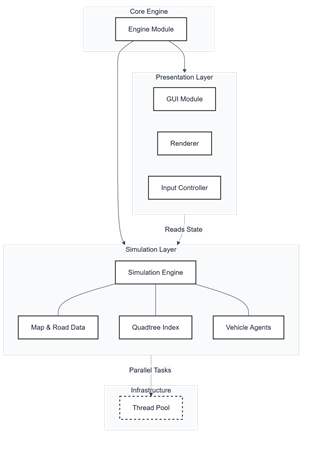
Furthermore, the project is designed for high accessibility and reproducibility through a text-based configuration system (FR4). A central configuration file handles the initialization of environmental variables, such as vehicle counts, and the specific map data to be parsed. By modifying this file, the user can change the simulation parameters without recompiling the source code, facilitating rapid iteration and consistent testing across different environments and configurations.
3.3 Real World Data modelling
One of the main goals of the simulator is the ability to simulate real world road networks. The design focuses on the integration of OpenStreetMap (OSM) data (FR1) following the extraction process illustrated in Figure 7. This allows the simulator to function within real world contexts, such as existing motorway junctions or city centres. The road network is modelled as a directed graph $G=(V,E)$, where vertices $V$ represent the intersections and dead ends, and edges $E$ represent road segments (see Figure 6). Each node in the graph stores geographical coordinates which are projected onto a 2D plane for the simulation. Edges are stored as objects containing essential metadata such as lane counts, speed limits and road classifications.
One significant design challenge involved managing how roads are represented as a series of points in OSM data. The design implements segment interpolation logic. This ensures that each vehicles movement follows the true curvature of real-world infrastructure rather than straight lines between nodes.
3.4 Agent logic
Following the microscopic modelling principles established in the literature review, each vehicle in the system is an autonomous agent. The design moves away from flow equations used in macroscopic simulations, instead focusing on the emergent behaviour resulting from individual decision making. Agents operate via a finite state machine (FSM) (see Figure 8) that dictates behaviour based on environmental input. The primary states include driving, where agents attempt to reach their target speed, braking, triggered by proximity to leading vehicles or approaching tight turns and waiting, such as when waiting at a junction to handle right of way.
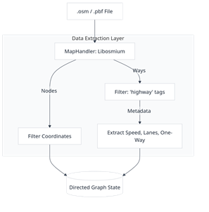
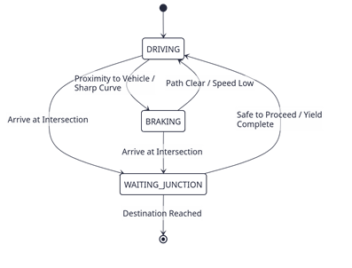
Agents follow specific kinematic properties, aiming to pass each node in their path while dynamically adjusting their velocity for sharp bends to manage their turning circle and momentum. With all these properties combined, the aim is to see emergent complex behaviours, such as queueing, and congestion emerge from these relatively simple rules without explicitly being programmed (FR2 and FR3). The agentic design aims to display the natural emergence of traffic patterns by introducing stochasticity into agent behaviour, as modelled by the Nagel-Schreckenberg cellular automaton (1992). By incorporating a 'randomization' step where agents have slightly randomised target speeds, the simulator captures the 'natural velocity fluctuations due to human behaviour' that are essential for realistic flow. This stochasticity allows the system to demonstrate a spontaneous transition from laminar traffic flow to start-stop-waves (phantom jams) as vehicle density increases. These patterns are not programmed but are emergent, resulting from the 'self-organization' of individual agents interacting within a bottleneck or high-density environment. This approach provides a robust platform for evaluating the digital system under realistic conditions, bridging the gap between theoretical microscopic modelling and the macroscopic phenomena observed in real-world freeway traffic.
To assist in the analysis of these emergent patterns, the design includes analytical rendering modes. While the "Normal" mode provides a standard visual representation for debugging and observation, the "Heatmap" mode provides a critical analytical overlay. In this mode, road segments are color-coded based on a congestion metric-typically the ratio of current speed to the speed limit. This allows researchers to immediately identify where traffic bottlenecks are occurring and how congestion propagates through the network over time, providing a clear visual link between microscopic agent behaviour and macroscopic system performance (FR6).
3.5 Test plan design
To ensure the simulator functions as designed, a formal test plan has been designed to verify the functional and non-functional requirements established earlier in this chapter. These tests provide a structured framework to quantitively and qualitatively evaluate the system.
| ID | Requirement | Title | Input/Conditions | Expected result |
|---|---|---|---|---|
| TC-01 | FR1 | OSM map parsing | Load a valid .osm map by specifying it in the configuration file, using Libosmium | The road network is correctly parsed into the system as a directed graph with valid metadata and is rendered on the screen. |
| TC-02 | FR3 | Pathfinding accuracy | Agents are assigned a destination node upon initialisation. | The pathfinder generates the most time-efficient route based on speed limits, not just distance. The vehicle is then seen to travel that path in the simulation. |
| TC-03 | FR2, FR3 | Agent automatic state transitions | Vehicle agent approaches a slower leading vehicle, tight corner or intersection | Agent state changes from DRIVING to BRAKING and velocity decreases. This can be seen in the info panel of the agent in the program. |
| TC-04 | NFR1, NFR4 | Quadtree optimisations | Run the simulation using a large number of agents (1000+) | Run benchmarks to verify the time complexity for agent updates is improved towards $O(n \log n)$, rather than $O(n^{2})$. |
| TC-05 | NFR3 | Parallel task execution | Enable the thread pool with N workers | Check the simulation logic is distributed against all cores, and the barrier sync is correctly preventing any race conditions. |
| TC-06 | FR6 | Heatmap rendering | Run a simulation for N ticks. | Switch to heatmap mode to verify the road segment colours dynamically shift from green through to orange and red as the average speed drops below the limit. |
| TC-07 | FR4 | Configuration modifiability | Modify the vehicle count or map file path in the external text-based config file. | The simulator initializes with the new parameters without needing recompilation. |
| TC-08 | FR5 | User interactivity | Use the mouse to select a specific vehicle or road segment in the UI. | The UI displays real-time statistics and information (e.g., current speed, average speed) for the selected entity. |
| TC-09 | NFR8 | Automated testing | Run the Google Test suite after a major update. | All 13 unit tests pass, confirming that additions did not break core math or logic. |
| TC-10 | FR8 | Dynamic road closures | User selects a road segment in the UI and toggles it to "Disabled" during an active simulation. | Agents currently on the road exit at the next junction; new agents recalculate paths using $A^{*}$ to avoid the closed segment. |
Figure 9 - A table containing the test cases and their relevant details.
4 - Implementation and testing
4.1 Environment and toolchain
The implementation of the traffic simulator takes the conceptual design into a high-performance digital system, necessitating a robust framework capable of managing the thousands of autonomous agents in real-time. The development was conducted using the C++ programming language (NFR2), specifically adhering to the $C++17$ standard. This choice was important for the project's success, as C++ provides the low-level memory management and hardware level control required to minimize latency in the simulation loops. Unlike higher level languages, C++ allowed for the use of cache friendly data structures and manual control over objects lifecycles.
The implementation leverages the Object-Oriented Programming (OOP) paradigm; as Stroustrup (1991) defines the paradigm, it allows the designer to "make commonality explicit by using inheritance". By representing vehicles, road segments and intersections as discrete objects (see Figure 10), the system can maintain modularity and maintainability, helping keep a clean and readable codebase as it grows. For example, the vehicle class contains all the logic for vehicles steering, speed control and state transitions, while the map class contains the directed graph representing the road network. This architectural choice facilitates the "separation of concerns" principle, ensuring that modifications to agent behaviour do not impact the geospatial data parsing or rendering modules.
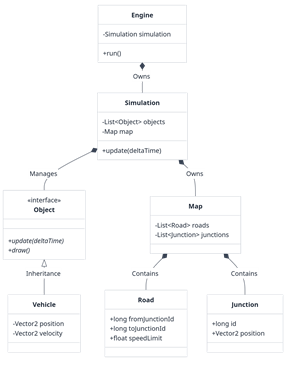
The toolchain used was selected to balance performance with developer efficiency. Libosmium was used to parse geospatial data, providing a high-performance framework for parsing OpenStreetMap (OSM) XML and PBF files (FR1). For the graphical interface, the system utilizes Raylib, a hardware-accelerated C-based library. Raylib was chosen for its minimal overhead and immediate-mode rendering (FR6). The system was managed through CMake for build automation and Git for version control, ensuring a reproducible build environment across systems. Finally, the project is targeting the Linux operating system for development (NFR5) and has been compiled and run on both native Linux and windows machines via Windows Subsystem for Linux (WSL) (TC-09). The development lifecycle followed an iterative prototyping model, where functional requirements were first implemented as basic implementations before being refined into the final architecture. This process was managed via a Kanban board (see Figure 11) to help manage tasks by priority over the course of the project.
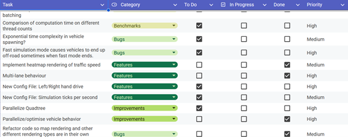
4.2 Core Components
At the core of the implementation is the translation of OSM data into a traversable directed graph. The Map class processes "ways" by filtering for drivable tags such as motorway, primary, and residential, while extracting vital metadata like speed limits and one-way restrictions (see Figure 12). A significant technical challenge addressed during implementation was the representation of lane-level detail. Because OSM data typically provides only centre-line coordinates, the system implements an 'offsetPolyline' function. This logic calculates the normal for each segment of a road and applies a lateral shift based on the lane count and driving side (FR1 and FR3).
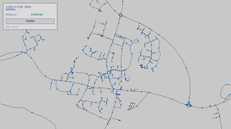
Agent navigation within this network is handled by a custom Pathfinder class implementing the $A^{*}$ search algorithm (Hart et al., 1968), each agent picking a random destination (A intersection on the map) and pathfinding to that location (as shown in Figure 13). To optimize pathfinding efficiency, the implementation uses a priority queue to manage the set of nodes that vehicles will travel between. The cost function is defined by the total estimated travel time, calculated as the segment length divided by the road's speed limit ensuring that agents find the most time-efficient routes through the network (FR3).
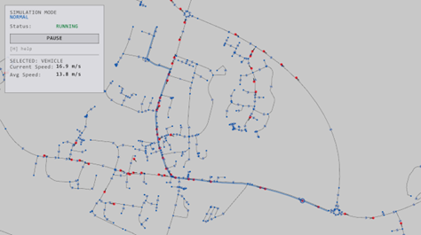
4.3 Optimization Strategies
As the implementation progressed, initial performance profiling revealed that the systems time complexity was a major bottleneck. Particularly, the agent-to-agent distance calculations. By default, the agents found the distance to other nearby agents by querying the distance to every other agent, resulting in a $O(N^{2})$ time complexity, making performance exponentially worse as the number of agents increases. To resolve this, a Quadtree data structure was implemented (NFR1). The quadtree recursively subdivides the environment into quadrants until it reaches its maximum depth or a specific capacity of agents in each quadrant. Agents then only perform spatial queries (such as the distance to nearby agents) to those within their own quadrant or the adjacent neighbours (see Figure 15). This implementation reduces the complexity of these queries to $O(n \log n)$ helping the simulation run fast even for large agent counts.
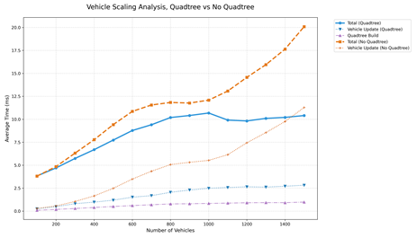
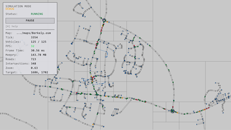
Furthermore, the system leverages the multi core architecture of modern processors by using parallelization using a thread pool (NFR3, Figure 16). Because each agent's behaviour is only dependent on the state of the simulation at the previous frame, the processing of agent logic is perfect for parallelization as each agent only needs to read from the system memory, removing any risk of race conditions. A barrier synchronization mechanism is at the end of each simulation tick to ensure that all agents have completed their updates before the Quadtree is rebuilt and the next frame is rendered. This system has been verified working on two different machines with different thread counts. Linear performance improvements have been observed per core added for the agent update logic (TC-05).
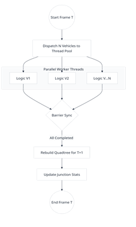
Similarly, when testing the real time mode, a large amount of processing time was found to be issuing an individual draw call for every road segment and intersection, which can lead to significant bottlenecks where the system becomes 'completely CPU limited' (Wloka, 2003). To optimize this, the renderer uses the concept of 'batching' (NFR4, NFR3 and FR6). The road geometry is aggregated into larger polygons, submitting them all as a single batch to the graphics hardware. This optimization ensures that even large-scale maps with complex curvatures do not degrade the visual performance of the system.
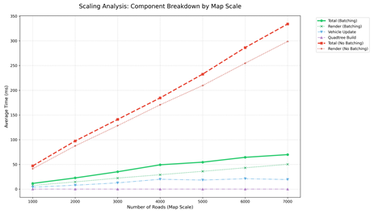
4.4 Testing
Testing was conducted through an approach involving both quantitative and qualitative methods. Quantitative validation was achieved through a comprehensive suite of unit tests using Google Test, which verified the mathematical stability of the $A^{*}$, Quadtree subdivision, and the vehicle state machine (NFR8, Figure 18). These tests were run throughout the development cycle to prevent regressions during the optimization and addition of features. Performance benchmarking was further utilized to generate time-series data and scaling graphs, measuring the execution time of the update loop against increasing agent densities.
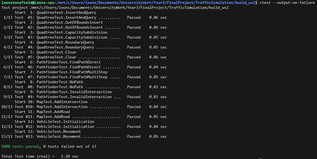
Qualitatively, the system was validated through the implementation of a heatmap mode (see Figure 19), which visually confirms the emergence of macroscopic phenomena like shockwaves and phantom jams (FR6). By color-coding agents and roads based on velocity-to-limit ratios, the simulation provides an intuitive interface for identifying bottlenecks, effectively proving that the local interactions of the microscopic agents successfully replicate complex, real-world traffic dynamics. Similarly, when selecting a road, the UI gives the user the option to close the road. Upon doing this, the road is not used for navigation, cars will find new paths around the closed roads, allowing users to evaluate how well traffic will function during road closures (FR8, TC-10).
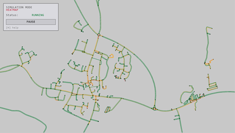
5 - Project evaluation
This project has been evaluated using a combination of quantitative and qualitative testing. This section details the technical performance of the system and where its limits lie. The primary objective of the project was the implementation of a high-performance engine to view the macroscopic behaviour emerge from the behaviours of individual agents interacting (Objective 2). The functional requirements stated that this should run at real time speeds in normal simulations. Performance benchmarking was performed using the 'benchmarker' class to measure computation times across various agent counts to understand how the system scales.
Before the implementation of spatial partitioning using the quadtree, the vehicle-to-vehicle distance checks had $O(n^{2})$ time complexity, causing significant speed degradation as agent numbers increased beyond 400 (see figure 14). By integrating this data structure, the system successfully reduced the number of unnecessary distance calculations to $O(n \log n)$. Benchmarking results indicate that the simulation maintains a stable frame rate of 60 FPS with up to 1,500 agents on standard consumer hardware (NFR1, NFR3 and NFR4, TC-04 and TC-05). The depth of the Quadtree was tuned to balance the overhead of tree reconstruction against the speed of spatial queries; it was determined that a maximum depth of 6 provided the optimal balance for the test cases being used. As well as this, the implementation of batching the map rendering significantly improved the rendering time, especially on larger maps. Benchmarking results found that on large maps (1000 nodes and more), the total frame time was halved after implementing batching vs before (see figure 17).
One of the significant objectives was the ability to simulate traffic flow on real world road networks (Objective 3). This was achieved using OpenStreetMap (OSM) data. The parser correctly interprets nodes and ways allowing the pathfinder class to generate valid routes across road networks (FR1 and FR3, TC-01 and TC-02) (see figure 9).
To assist in the analysis of emergent traffic patterns, a heatmap renderer was implemented. This tool provides a qualitative method for identifying bottlenecks within the network. It was observed during testing that congestion would naturally emerge at specific busy junctions, such as roundabouts on main roads, showing that the microscopic agent behaviours successfully aggregate into the macroscopic traffic phenomena (FR2, FR3 and FR6, TC-03 and TC-06, Objective 1) (see figure 19).
The functional requirements of user control were satisfied throughout. The text-based configuration file became a useful tool for rapid iteration (TC-07), and the system integrated an interactive UI, such as the ability to select roads, junctions and vehicles to view details about them, and toggle between different rendering modes using keyboard shortcuts (TC-08). Users are also able to dynamically enable and disable roads after selecting them, allowing for the evaluation of traffic flow during road closures, a very useful use case for the project (FR8, TC-10).
Despite the successful implementation of the core engine, some limitations were also identified. The reliance on open-source OSM data presented challenges; specifically, the lack of standardized speed limit data on minor roads required the implementation of fallback default values, which may not always be accurate. Additionally, often intersections that lay on roundabouts were not labelled as such, leading to instances where agents did not behave as they would in the real world due to missing metadata. Furthermore, the simulation currently lacks comprehensive traffic management infrastructure. The absence of functional traffic light controllers and stop signs limits the accuracy of urban flow modelling, particularly in high-density city centres where signal timing is the primary regulator of traffic (FR7). Agents currently rely solely on proximity-based yielding, which does not fully capture the stop-and-start dynamics of signalled urban environments.
To ensure the reliability through the development of the project, the google test (GTest) framework was utilised for unit testing (NFR8). Components such as the quadtree and map parsing functions were automatically tested to prevent regressions when implementing new features or optimisations. This meant that the simulation remained stable even when it grew in complexity.
6 - Further work and conclusion
This project has successfully established a high-performance, agent-based traffic simulation foundation capable of replicating complex macroscopic phenomena through the interaction of individual microscopic agents.
6.1 Further Work
Future iterations of the simulator should improve the scope of the environment with additional features to ensure a more realistic simulation of traffic flow. Specifically, the simulation could move beyond random pathing by incorporating "Origin-Destination" (OD) matrices derived from census data to model realistic travel demands within urban environments. The inclusion of functional traffic light controllers and stop signs would address current limitations in urban flow modelling (FR7). Additionally, the system could be expanded to analyse environmental or economic effects, such as tracking fuel consumption or emissions based on vehicle idling and acceleration. Usability could be further enhanced by increasing the number of modifiable parameters and allowing users to interact more with the environment dynamically, such as manually creating vehicles and setting their destinations.
6.2 Conclusion
The implementation successfully addressed the computational challenges of simulating thousands of agents in real-time. A primary achievement was the integration of a Quadtree spatial partitioning structure (NFR1), which reduced the time complexity of agent interactions from $O(N^{2})$ to $O(n \log n)$. This optimization, verified through performance benchmarking (TC-04), allowed the simulation to maintain a stable 60 FPS with up to 1,500 agents on standard hardware. The system also leveraged modern multi-core architectures through a parallel thread pool (NFR3), achieving linear performance improvements for agent update logic (TC-05). Furthermore, the renderer utilized batching to aggregate road geometry (NFR4), which halved the total frame time on large-scale maps (TC-06). The Heatmap rendering mode (FR6) successfully validated the emergence of macroscopic traffic patterns, such as "phantom" jams, proving that the localized agent behavioural state machine (FR2, FR3) accurately replicates complex real-world dynamics (TC-03, TC-06).
Despite these technical successes, the reliance on OpenStreetMap data presented challenges (FR1); missing metadata for speed limits and roundabouts meant agents occasionally made assumptions that reduced simulation realism (TC-01). The current lack of signal timing infrastructure (FR7) also limits accuracy in high-density centres. The project met its goal of creating a high-performance agent-based modelling foundation that bridges the gap between theoretical microscopic logic and observed macroscopic behaviour. The results demonstrate that the custom C++ architecture is highly scalable and well-suited for future expansion into urban planning applications. By integrating real-world geospatial data (FR1) with optimized data structures and algorithms (NFR1), this simulator provides a powerful platform for evaluating digital transportation systems under realistic conditions.
7 - Table of abbreviations
| Abbreviation | Definition |
|---|---|
| ABM | Agent-Based Modelling |
| OSM | OpenStreetMap |
| FSM | Finite State Machine |
| SIMD | Single Instruction, Multiple Data |
| GPU | Graphics Processing Unit |
| CPU | Central Processing Unit |
| DOD | Data-Oriented Design |
| FPS | Frames Per Second |
| OOP | Object-Oriented Programming |
| WSL | Windows Subsystem for Linux |
| OD | Origin-Destination (matrices) |
Figure 20-Table of abbreviations.
8 - References/Bibliography
- Acton, M. dir. (2014) [online]. Available from: https://www.youtube.com/watch?v=rX0ItVEVjHc.
- Al-Akaidi, M. ed. (2002) MESM 2002, October 28-30, 2002, American University, Sharjah, UAE [online]. Ghent, Belgium: SCS.
- Axhausen, K.W. and ETH Zürich (2016) The Multi-Agent Transport Simulation MATSim. ETH Zürich, Horni, A., Nagel, K., and TU Berlin, eds [online]. Ubiquity Press.
- Balmer, M., Meister, K., Rieser, M., Nagel, K. and Axhausen, K. (2008) Agent-based simulation of travel demand: Structure and computational performance of MATSim-T. [online].
- Barceló, J. (2010) 'Fundamentals of Traffic Simulation' International Series in Operations Research & Management Science. 1st edn. [online]. New York, NY: Springer Science+Business Media, LLC.
- Botea, A., Müller, M. and Schaeffer, J. (2004) Near optimal hierarchical path-finding (HPA*). Journal of Game Development [online].
- Clegg, D. and Barker, R. (1994) 'CASE method fast track: a RAD approach Computer aided systems engineering. 1. pr. Wokingham, England Reading, Mass: Addison-Wesley Pub. Co.
- Daganzo, C.F. (2007) Urban gridlock: Macroscopic modeling and mitigation approaches. Transportation Research Part B: Methodological [online]. 41 (1), pp. 49-62.
- Eclipse SUMO - Simulation of Urban Mobility (2025) Eclipse SUMO - Simulation of Urban Mobility [online]. Available from: https://eclipse.dev/sumo/.
- Fellendorf, M. and Vortisch, P. (2011) Microscopic traffic flow simulator VISSIM. Fundamentals of Traffic Simulation (pp.63-93) [online]. pp. 63-93.
- Gipps, P.G. (1981) A behavioural car-following model for computer simulation. Transportation Research Part B: Methodological [online]. 15 (2), pp. 105-111.
- Hart, P., Nilsson, N. and Raphael, B. (1968) A Formal Basis for the Heuristic Determination of Minimum Cost Paths. IEEE Transactions on Systems Science and Cybernetics [online]. 4 (2), pp. 100-107.
- Hoogendoorn, S.P. and Bovy, P.H.L. (2001) State-of-the-art of vehicular traffic flow modelling. Proceedings of the Institution of Mechanical Engineers, Part I: Journal of Systems and Control Engineering [online]. 215 (4), pp. 283-303.
- Kesting, A., Treiber, M. and Helbing, D. (2007) General Lane-Changing Model MOBIL for Car-Following Models. Transportation Research Record: Journal of the Transportation Research Board [online]. 1999 (1), pp. 86-94.
- Kiran, B.R., Sobh, I., Talpaert, V., Mannion, P., Sallab, A.A.A., Yogamani, S. and Pérez, P. (2020) Deep Reinforcement Learning for Autonomous Driving: A Survey [online].
- Koenig, S. and Likhachev, M. (2002) D*Lite. Proceedings of the National Conference on Artificial Intelligence [online]. pp. 476-483.
- Krajzewicz, D., Erdmann, J., Behrisch, M. and Bieker-Walz, L. (2012) Recent Development and Applications of SUMO - Simulation of Urban Mobility. International Journal On Advances in Systems and Measurements [online].
- Lighthill, M.J. and Whitham, G.B. (1955) On kinematic waves II. A theory of traffic flow on long crowded roads. Proceedings of the Royal Society of London. A. Mathematical and Physical Sciences [online]. 229 (1178), pp. 317-345.
- Lopez, P.A. et al. (2018) Microscopic Traffic Simulation using SUMO. 2018 21st International Conference on Intelligent Transportation Systems (ITSC) [online]. Maui, HI: IEEE, pp. 2575-2582.
- Meyers, S. (2014) 'Effective C++: 55 specific ways to improve your programs and designs' Addison-Wesley professional computing series. 3. ed.
- Nagel, K. and Schreckenberg, M. (1992) A cellular automaton model for freeway traffic. Journal de Physique I [online]. 2 (12), pp. 2221-2229.
- Nguyen, J., Powers, S.T., Urquhart, N., Farrenkopf, T. and Guckert, M. (2021) An overview of agent-based traffic simulators. Transportation Research Interdisciplinary Perspectives [online]. 12, p. 100486.
- Papageorgiou, M. (1998) Some remarks on macroscopic traffic flow modelling. Transportation Research Part A: Policy and Practice [online]. 32 (5), pp. 323-329.
- Passos, L.S., Rossetti, R.J.F. and Kokkinogenis, Z. (2011) Towards the next-generation traffic simulation tools: a first appraisal. 6th Iberian Conference on Information Systems and Technologies (CISTI 2011) [online]. pp. 1-6.
- Payne, H.J. (1973) Freeway Traffic Control and Surveillance Model. Transportation Engineering Journal of ASCE [online]. 99 (4), pp. 767-783.
- Richards, P.I. (1956) Shock Waves on the Highway. Operations Research [online]. 4 (1), pp. 42-51.
- Sandhu, R.S., Coyne, E.J., Feinstein, H.L. and Youman, C.E. (1996) Role-based access control models. Computer [online]. 29 (2), pp. 38-47.
- Stroustrup, B. (2015) The C++ programming language: C++11. 4. ed. Upper Saddle River, NJ: Addison-Wesley.
- Stroustrup, B. (1988) What is object-oriented programming? IEEE Software [online]. 5 (3), pp. 10-20.
- Sugiyama, Y., Fukui, M., Kikuchi, M., Hasebe, K., Nakayama, A., Nishinari, K., Tadaki, S. and Yukawa, S. (2008) Traffic jams without bottlenecks-experimental evidence for the physical mechanism of the formation of a jam. New Journal of Physics [online]. 10 (3), p. 033001.
- Treiber, M., Hennecke, A. and Helbing, D. (2000) Congested Traffic States in Empirical Observations and Microscopic Simulations. Physical Review E [online]. 62 (2), pp. 1805-1824.
- Wang, Y., Yu, X., Guo, J., Papamichail, I., Papageorgiou, M., Zhang, L., Hu, S., Li, Y. and Sun, J. (2022) Macroscopic traffic flow modelling of large-scale freeway networks with field data verification. Transportation Research Part C: Emerging Technologies [online]. 145, p. 103904.
- Wiedemann, R. (1974) Simulation des Straßenverkehrsflusses (Simulation of Road Traffic Flow).
- Wloka, M. (2003) "Batch, Batch, Batch:" What Does It Really Mean? [online]. Available from: https://www.nvidia.com/docs/io/8228/batchbatchbatch.pdf.
- Xiao, J., Andelfinger, P., Eckhoff, D., Cai, W. and Knoll, A. (2018) Exploring Execution Schemes for Agent-Based Traffic Simulation on Heterogeneous Hardware. 2018 IEEE/ACM 22nd International Symposium on Distributed Simulation and Real Time Applications (DS-RT) [online].
- Zhang, J., Ao, W., Yan, J., Jin, D. and Li, Y. (2024) A GPU-accelerated Large-scale Simulator for Transportation System Optimization Benchmarking [online]. Available from: https://arxiv.org/abs/2406.10661.